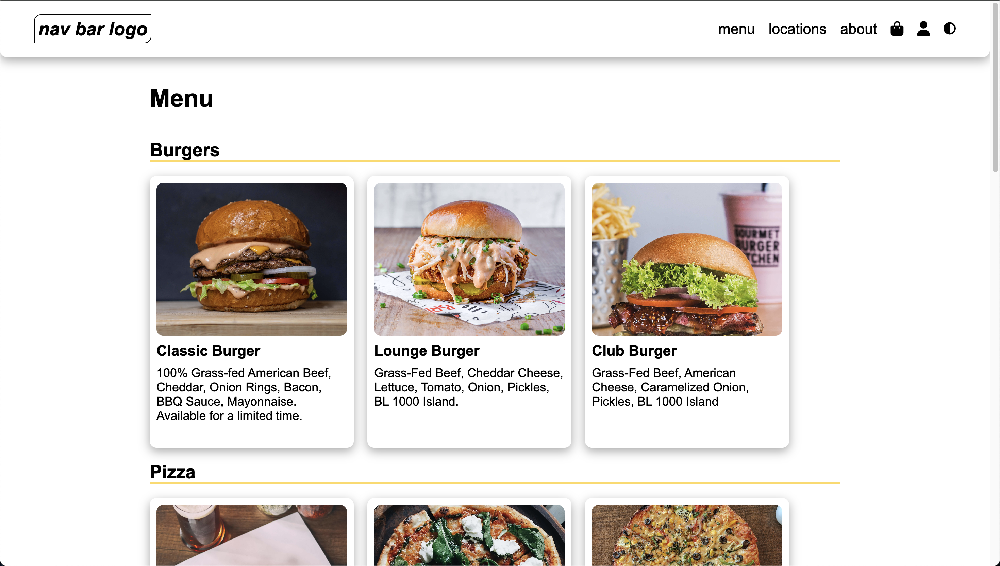

About Me
Hello, my name is Marcos Elias and I recently graduated from San Diego State with a Bachelors in Computer Science. I like to both watch and play sports and I like to play the guitar.
Currently, I am enrolled in Kreativstorm's Hands-On Training Program, where I receive guidance from an industry professional to explore the latest industry trends, technologies, and best practices. Simultaneously, I'm honing essential soft skills such as communication, leadership, and teamwork.
My current focus involves completing courses on React and NodeJS through codewithmosh.com and fireship.io. I have completed the HTML, CSS, and JavaScript courses and have also completed CodePath's Intro to Web Development course. This commitment aims to further improve my skills and proficiency in these areas.
My passion lies in Front-End Web Development, and I am seeking an entry-level position to gain hands-on experience and refine my expertise.
Education
Bachelor of Science, Computer Science
San Diego State University
Experience
Kreativstorm Frontend Development Hands-on Training Program
Front-End Developer Trainee | August 2023 - October 2023
- Received guidance from an industry professional to explore the latest industry trends, technologies, and best practices.
- Improved on essential soft skills such as communication, leadership, and teamwork.
- Implemented responsive design techniques to ensure optimal display on various devices.
Service-Learning Tutoring Program
Service-Learning Tutor | January 2020 - April 2023
- Provided guidance and support as a tutor/mentor to students in AP Computer Science and other STEM-related courses, helping them to deepen their understanding of complex concepts and achieve academic success
- Took initiative to reach out to the technology academy (AOIT) at my school site about Pathways tutoring, in order to greatly increase the support for STEM at the high school level.
- Experience with both in-person and virtual tutoring, as well as private tutoring.
Certificates
- Kreativstorm Frontend Development Hands-on Training Program
- CodePath Intro to Web Development
- Code with Mosh - HTML & CSS Course
Skills
- Languages: Javascript, HTML, CSS, Java, C++, C#, Python
- Version-Control: Git, GitHub, GitLab
- Responsive Design
- Front-End Frameworks: Experience with React.js
- CSS/UI Frameworks: Experience with Tailwind CSS
- Relational Databases: Experience with mySQL
- Unity Game Development
- Arduino Programming
- Bilingual (English, Spanish)
Projects
React Budgeter

With this project I practiced how to work with an array of objects and how to display the objects as list items. I used updater functions and array methods to properly display content. This project helped me understand React a bit more.
I also used Tailwind CSS for this project as it has always seemed interesting. It has its pros and cons but I will continue to try it out.
View Website GitHub RepoReact Color Picker

At first I had trouble understanding React and why it is so popular. I am starting to get the hang of it now and it does make sites easier to make and maintain. React components are like Legos which is pretty cool. I want to remake my Portfolio site with React.
I had some issues trying to deploy a React + Vite project to GitHub but I finally figured it out. I will be working on a To-Do List project next.
View Website GitHub RepoJS RockPaperScissors Game
I expiremented with some fancy border radius styling to create some cool unique shapes. I added a scoreboard to keep track of the users points and the "computers" points. Ofcourse the project works on mobile screens and tablet screens as well.
The javascript was both fun and a little bit challenging to complete. Making helper functions makes it easier to read the code and keep adding features.
View Website GitHub RepoRestaurant Project
My page was having some performance issues due to large image sizes. I remade my site to fix these issues and to use more semantic html so that my site can be more maintainable. I also made my site responsive as it was lacking in that category before.
My favorite feature is the cool Dark Mode feature that remains persistent. I also changed the styling of my site as I felt it was kinda lacking in looks
View Website GitHub RepoMy Portfolio Website
I remade my Porfolio Website since I felt my old code was messy. This time I used Component Based CSS and the techniques and best practices that I have learned while taking Kreativstorms Hands-On Training Program. I started off by choosing a color palette and the typography of my site. I then created components and implemented them to my site all while making constant commits to my GitHub.
GitHub RepoWeather API Project
This is my first project working with APIs. It was challenging trying to understand how to select certain data from the JSON recieved, but it got interesting once I started to comprehend. I expiremented with some glassmorphism and other cool CSS tricks.
I am still new to working with APIs but I will continue practicing as I understand that working with APIs is a key skill.
View Website GitHub RepoKreativstorm Group Project
This was a group project that I worked on as part of Kreativstorms Front End training Program. This program had students from all over the world and so it was challenging to setup meetings since we all lived in different countries.
I had fun meeting people from different backgrounds and cultures all working hard to be Front End Developers just like me. I was in charge of the Matches page for this site
View Website GitHub RepoLeaving Earth Game
Making my own game was one of my favorite projects to work on. Players customize their own rocket ship and must navigate it through dangerous asteroids in space.
This project showcases my proficiency in game development using Unity, C#, Visual Studio, and Git/GitHub. I also made all of the art for this game.
GitHub RepoRoll Character Menu
This project was my first introduction to C# scripting and JSON. Here I demonstrate my ability to work with various types of input fields and user provided data to make a Dungeons and Dragons style Roll Character menu.
I gained experience in designing intuitive and user friendly interfaces. All the art in this project is original.
GitHub RepoKick Returner Game
Through this Group Project, I further developed skills in project management, teamwork, and communication. I learned the importance of version control and clean code. Additionally, I acquired valuable experience in implementing game mechanics and ensuring a polished user experience.
My groupmates and I leveled up our abilities to troubleshoot and debug.
GitHub RepoHeat Wave Detector
This project was my first introduction to Arduino boards. This was a group project and although our final code was very simple, it was both challenging and fun learning about all the hardware mistakes we made along the way.
My groupmates and I acquired skills in problem-solving, research, and adaptability with this project as we encountered numerous challenges while working with new parts and technologies.
Motion Detector
I learned about microcontrollers in a hands-on way and got to experience the many issues one can face with hardware, such as using incompatible parts or not connecting wires properly.